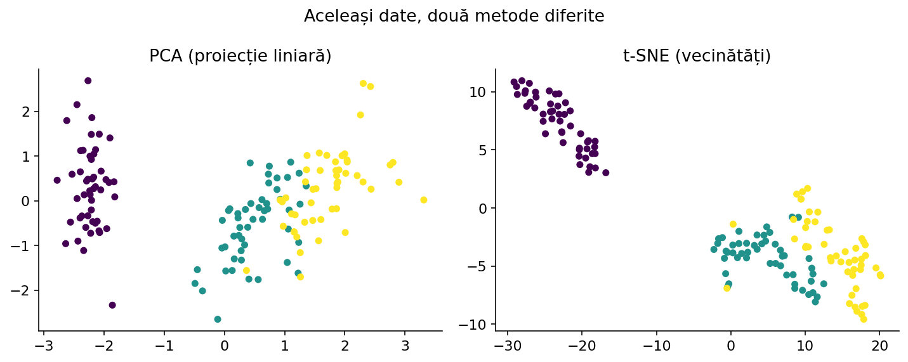
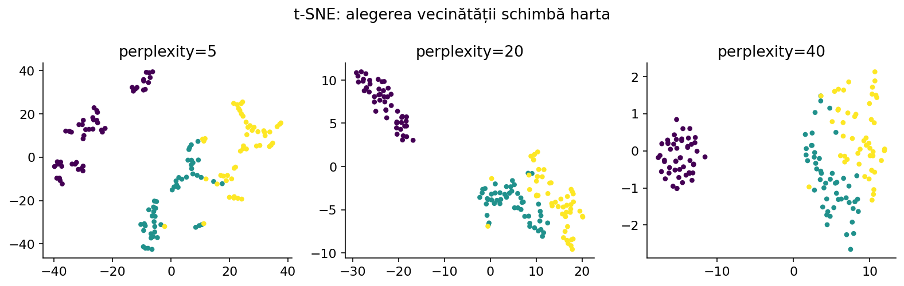
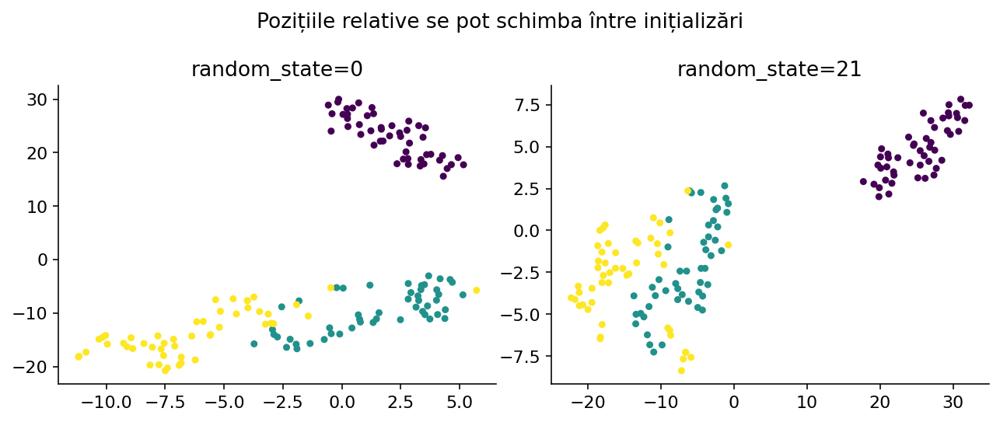
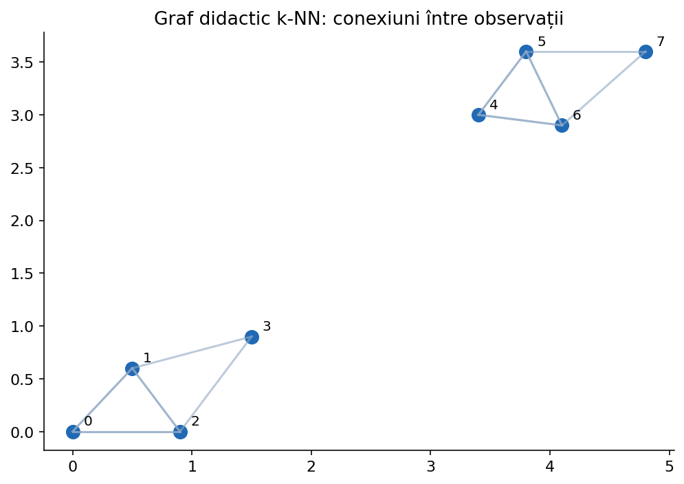

Cum transformăm multe caracteristici în două coordonate pentru a explora vecinătăți, fără să confundăm desenul 2D cu distanțele exacte din spațiul original.
Deschide laboratorul pe tot ecranul ↗Dacă fiecare imagine este reprezentată de sute de caracteristici, nu putem reprezenta direct observațiile într-un plan. O proiecție liniară PCA este utilă și rapidă, dar poate suprapune regiuni care sunt bine separate prin relații neliniare.
În metodele de tip manifold learning pornim de la ideea că vecinii din spațiul cu multe caracteristici ar trebui să rămână, pe cât posibil, vecini și în reprezentarea 2D. t-SNE și UMAP folosesc moduri diferite de a descrie și optimiza aceste vecinătăți.

Pentru un punct xᵢ, observăm ce alte puncte au o distanță mică. t-SNE atribuie probabilități mai mari punctelor apropiate și mai mici celor îndepărtate. În planul rezultat construiește alte probabilități și încearcă să le apropie de cele originale.
Nu caută să păstreze fiecare distanță exact. Scopul principal este să plaseze într-o reprezentare accesibilă observațiile care au relații de vecinătate puternice. Două „insule” îndepărtate în desen nu înseamnă automat că distanța dintre ele în spațiul original este la fel de mare.
Pornim de la distanțele dintre observații. Pentru fiecare punct i, o funcție Gaussiană pune probabilitate mai mare pe vecinii apropiați: p(j|i) ∝ exp(−||xᵢ−xⱼ||²/(2σᵢ²)). Elementul de pe diagonală este exclus.
Împărțim fiecare greutate la suma greutăților pentru acel punct. Parametrul σᵢ se ajustează separat pentru fiecare observație, astfel încât distribuția vecinilor să aibă o entropie care corespunde valorii perplexity. Nu se folosește o singură rază fixă pentru toate punctele.
from math import exp puncte = [[0., 0.], [1., 0.], [3., 0.]] centru = puncte[1] sigma = 1.0 ponderi = [] for i, p in enumerate(puncte): if p == centru: ponderi.append(0.0) else: d2 = (p[0]-centru[0])**2 + (p[1]-centru[1])**2 ponderi.append(exp(-d2/(2*sigma**2))) s = sum(ponderi) print([round(w/s, 3) for w in ponderi])
Perplexity nu este exact un număr fix de vecini, ci o valoare derivată din entropia unei distribuții: perplexity = 2ᴴ, unde H este entropia în biți. Poate fi înțeleasă aproximativ ca mărimea vecinătății relevante.
Valori mici pun accent pe structuri locale fine și pot produce mai multe grupuri vizuale; valori mari folosesc o vecinătate mai largă. Parametrul trebuie să fie strict mai mic decât numărul de observații. Pentru 12 puncte nu putem alege perplexity=30.

În plan, t-SNE modelează asemănarea perechilor prin qᵢⱼ ∝ 1/(1+||yᵢ−yⱼ||²), apoi normalizează. Aceasta corespunde unei distribuții Student cu cozi grele; punctele depărtate pot avea totuși probabilități nenule suficient de mari pentru a reduce aglomerarea (crowding) în centru.
Ideea este că nu toate punctele învecinate în spațiul original pot fi perfect păstrate aproape într-un plan. t-SNE încearcă o soluție de compromis. Reprezentarea este o hartă de explorare, nu o nouă definiție a distanței reale dintre date.
Algoritmul compară probabilitățile din spațiul original P cu cele din spațiul 2D Q. Folosește divergența Kullback–Leibler: KL(P||Q)=Σᵢ≠ⱼ pᵢⱼ ln(pᵢⱼ/qᵢⱼ). Dacă o pereche care era apropiată inițial devine prea îndepărtată, contribuția la eroare crește.
Prin gradient descent actualizează coordonatele 2D ale punctelor, nu coeficienții unui clasificator. La fiecare iterație, relațiile de atracție și respingere schimbă harta. Funcția este neconvexă, deci două porniri pot genera reprezentări diferite.
from math import log P = [0.50, 0.30, 0.20] Q = [0.45, 0.35, 0.20] kl = sum(p*log(p/q) for p, q in zip(P, Q)) print(round(kl, 5))
Un nor de puncte colorat poate arăta că unele observații similare ajung în aceeași zonă. În schimb, mărimea insulelor, forma exactă, distanța dintre două grupuri și suprafața ocupată pot depinde puternic de parametrii și de random seed.
Ori de câte ori folosești culorile pentru etichete cunoscute, reține că etichetele servesc numai la verificarea vizuală ulterioară; algoritmul t-SNE nu le primește. Nu transforma graficul într-o dovadă că un model ar obține o anumită acuratețe.

n_components este de regulă 2; perplexity controlează scara vecinătăților și trebuie să fie sub n_samples; early_exaggeration influențează separarea inițială a grupurilor; learning_rate controlează viteza actualizărilor; max_iter stabilește bugetul de optimizare.
init poate fi „pca” sau „random”; random_state ajută la reproducerea experimentelor. metric stabilește măsura distanței, method poate fi „barnes_hut” sau „exact”, angle controlează compromisul viteză–aproximare pentru Barnes–Hut, iar n_jobs influențează unele calcule. n_iter_without_progress și min_grad_norm sunt criterii de oprire.
Important: în API-urile actuale se folosește max_iter, nu vechiul n_iter. fit_transform oferă coordonatele 2D; clasa TSNE din scikit-learn nu oferă o metodă obișnuită transform pentru noi observații.
from sklearn.manifold import TSNE from sklearn.datasets import load_iris from sklearn.preprocessing import StandardScaler X, y = load_iris(return_X_y=True) X = StandardScaler().fit_transform(X) model = TSNE(n_components=2, perplexity=25, learning_rate='auto', init='pca', max_iter=750, random_state=42) Y = model.fit_transform(X) print(Y.shape, round(model.kl_divergence_, 3))
UMAP construiește pentru fiecare observație o listă de vecini pe baza unei metrici alese. Între puncte apar conexiuni cu intensități diferite, reprezentând apartenența la vecinătatea locală. Conexiunile locale sunt apoi combinate într-un graf global de relații.
În pasul de proiecție, UMAP caută coordonate 2D care păstrează în mod aproximativ aceste legături, combinând atracția dintre vecini cu mecanisme care descurajează suprapunerea excesivă a punctelor. Nu este o simplă aplicare a PCA sau o împărțire în clustere.

Pornim de la un set de observații, calculăm distanțele și alegem pentru fiecare punct cei n_neighbors vecini apropiați. Conexiunile sunt ponderate: cele foarte apropiate au greutate mare, iar cele mai îndepărtate primesc de obicei greutăți mai mici.
Aceste ponderi sunt apoi combinate, deoarece relația „A îl vede pe B drept vecin” nu este neapărat identică cu „B îl vede pe A drept vecin”. În laboratorul UMAP prezentăm acest graf didactic, cu muchiile și vecinii expliciți; nu pretindem că orice proiecție schematică obținută doar prin forțe este rezultatul exact al bibliotecii UMAP.
import numpy as np from sklearn.neighbors import NearestNeighbors X = np.array([[0,0], [1,0], [1,1], [5,5], [6,5]], dtype=float) vecini = NearestNeighbors(n_neighbors=3).fit(X) distante, indici = vecini.kneighbors(X) for i in range(len(X)): print('Punct', i, 'vecini (inclusiv sine):', indici[i].tolist())
La n_neighbors mic, UMAP acordă mai multă atenție vecinătăților fine. Grupurile mici pot deveni vizibile, dar structura globală poate fi mai puțin stabilă. La n_neighbors mai mare, harta reflectă relații mai ample dintre observații, uneori cu pierderea detaliilor locale.
Nu există o valoare universal optimă. Pentru vizualizare, încearcă câteva valori reprezentative și verifică dacă concluziile rămân stabile. Nu confunda n_neighbors cu numărul de clustere.
min_dist controlează cât de strâns pot fi împachetate punctele în reprezentarea finală. Valori mici pot face „insule” mai compacte; valori mai mari întind punctele. Parametrul spread contribuie la scara generală a distribuției.
Faptul că prin schimbarea min_dist un nor pare mai compact nu înseamnă că datele originale au devenit mai asemănătoare. Pentru comparații corecte păstrează fixate etichetele, scara originală a caracteristicilor și o parte din parametri, apoi schimbă unul singur.
UMAP se instalează prin pachetul extern umap-learn (import umap). n_neighbors controlează amploarea vecinătăților; n_components numărul de coordonate produse; min_dist compactitatea grupurilor; metric tipul distanței (de exemplu euclidean, cosine în situații potrivite).
random_state facilitează reproducerea, uneori cu impact asupra vitezei; spread schimbă scara desenului; learning_rate influențează optimizarea; n_epochs reglează durata; init stabilește pornirea (de exemplu spectral/random). Sunt și opțiuni mai specializate, cum ar fi negative_sample_rate, repulsion_strength, local_connectivity, set_op_mix_ratio, transform_seed.
UMAP.fit_transform(X_train) produce reprezentarea de antrenare, iar UMAP.transform(X_new) poate proiecta observații noi (în condițiile de utilizare și limitările metodei). Acest lucru îl diferențiază practic de implementarea TSNE din scikit-learn.
# Instalează separat dacă nu ai biblioteca: pip install umap-learn import umap from sklearn.datasets import load_iris from sklearn.preprocessing import StandardScaler X, _ = load_iris(return_X_y=True) X = StandardScaler().fit_transform(X) model = umap.UMAP(n_neighbors=15, min_dist=0.1, n_components=2, metric='euclidean', random_state=42) Z = model.fit_transform(X) print(Z.shape)
PCA găsește un subspațiu liniar și oferă o transformare ușor de aplicat observațiilor noi. t-SNE urmărește în special vecinătățile locale și este folosit preponderent la vizualizare. UMAP lucrează printr-un graf al vecinătăților și poate produce o transformare aplicabilă în anumite condiții și noilor puncte.
Nu declara că un algoritm este „mai bun” doar pentru că separă culorile mai vizibil. În competiții, un embedding frumos nu garantează o metrică mai bună. Evaluează separat metodele din perspectiva obiectivului: explorare, compresie, vizualizare sau preprocesare pentru alt model.
O măsură utilă este trustworthiness, care verifică în ce măsură vecinii din noul spațiu erau deja vecini în spațiul original. Scorul este între 0 și 1, iar valori mari indică păstrarea mai bună a relațiilor locale în sensul acestei metrici.
Folosește aceeași preprocesare și același set pentru comparație. trustworthiness nu demonstrează separarea unor clase sau utilitatea într-un model predictiv și nu descrie complet relațiile globale.
from sklearn.datasets import load_iris from sklearn.decomposition import PCA from sklearn.manifold import trustworthiness from sklearn.preprocessing import StandardScaler X, _ = load_iris(return_X_y=True) X = StandardScaler().fit_transform(X) Z = PCA(n_components=2).fit_transform(X) print(round(trustworthiness(X, Z, n_neighbors=5), 3))
1. Inspectează tipurile, valorile lipsă și scara caracteristicilor. 2. Aplică o preprocesare justificată. 3. Dacă numărul de caracteristici este foarte mare, redu-l inițial cu PCA sau TruncatedSVD înainte de t-SNE. 4. Fixează seed-ul. 5. Compară două-trei valori pentru hiperparametrii principali, nu doar cel mai „frumos” grafic.
6. Verifică stabilitatea în mai multe porniri. 7. Folosește culorile claselor numai pentru interpretare, nu pentru a ajusta vizual algoritmul fără protocol. 8. Dacă ai nevoie de predicții pe date ascunse, dezvoltă un model predictiv și validează-l separat; t-SNE și UMAP nu înlocuiesc în mod automat un clasificator.
Pentru a înțelege exact ce actualizează t-SNE, putem implementa o variantă mică, doar cu NumPy. Simplificăm construirea vecinătăților: folosim aceeași lățime Gaussiană pentru toate punctele, nu efectuăm căutarea binară a valorilor σᵢ pentru o perplexity impusă și nu utilizăm early exaggeration sau moment. Prin urmare, este o variantă pedagogică a obiectivului t-SNE, nu un înlocuitor echivalent al implementării sklearn.
Pașii sunt: (1) calculăm distanțele inițiale și o matrice P de probabilități simetrice, fără diagonală; (2) inițializăm pozițiile 2D Y; (3) calculăm qᵢⱼ = (1+||yᵢ−yⱼ||²)⁻¹ normalizate; (4) pentru fiecare punct adunăm contribuțiile 4(pᵢⱼ−qᵢⱼ)(yᵢ−yⱼ)/(1+||yᵢ−yⱼ||²); (5) actualizăm coordonatele cu o rată de învățare. Numerele afișate după fiecare zece pași permit verificarea optimizării.
import numpy as np X = np.array([[0., 0.], [0.2, 0.1], [3., 3.], [3.2, 2.9]]) n = len(X) d2 = ((X[:, None, :] - X[None, :, :]) ** 2).sum(axis=2) P = np.exp(-d2 / 2.0) np.fill_diagonal(P, 0) P = P / P.sum() rng = np.random.default_rng(0) Y = rng.normal(0, 0.01, (n, 2)) for pas in range(51): delta = Y[:, None, :] - Y[None, :, :] dist2_y = (delta ** 2).sum(axis=2) inv = 1.0 / (1.0 + dist2_y) np.fill_diagonal(inv, 0) Q = inv / inv.sum() cost = np.sum(P[P > 0] * np.log(P[P > 0] / Q[P > 0])) if pas % 10 == 0: print(pas, round(cost, 5)) grad = 4 * np.sum(((P-Q)*inv)[:, :, None] * delta, axis=1) Y -= 2.0 * grad print('Coordonate finale:', Y.round(2))
Optimizarea completă UMAP include estimarea distanțelor locale adaptate densității, construirea unui graf fuzzy și o funcție de pierdere cu eșantionare negativă; reproducerea sa fidelă într-o funcție scurtă destinată liceului ar ascunde tocmai conceptele dificile. În schimb, implementăm explicit primul mecanism: distanța dintre puncte, selecția vecinilor și un graf ponderat. Apoi folosim biblioteca umap-learn pentru proiecția numerică autentică.
Codul de mai jos folosește doar Python și afișează fiecare muchie orientată a grafului, cu o greutate pedagogică w=exp(−d). Aceasta nu este funcția exactă de afiliere fuzzy din UMAP, ci un model simplificat pentru a înțelege de ce graful poate fi construit fără etichetele claselor. Laboratorul interactiv afișează graful și permite schimbarea lui n_neighbors; proiecția UMAP propriu-zisă rămâne în exemplul cu biblioteca oficială.
from math import dist, exp X = [[0., 0.], [1., 0.], [1., 1.], [5., 5.], [6., 5.]] k = 2 for i, p in enumerate(X): vecini = [] for j, q in enumerate(X): if i != j: vecini.append((dist(p, q), j)) vecini.sort() print('Punct', i) for d, j in vecini[:k]: print(' ->', j, 'd =', round(d, 3), 'greutate didactică =', round(exp(-d), 3))
t-SNE și UMAP sunt metode de reducere neliniară orientate spre structură locală. Distanțele și ariile dintre grupurile desenate nu trebuie interpretate automat ca semnificație statistică sau separare reală.
TSNE — scikit-learn · UMAP — parametri și exemple · UMAP — reproducibilitate